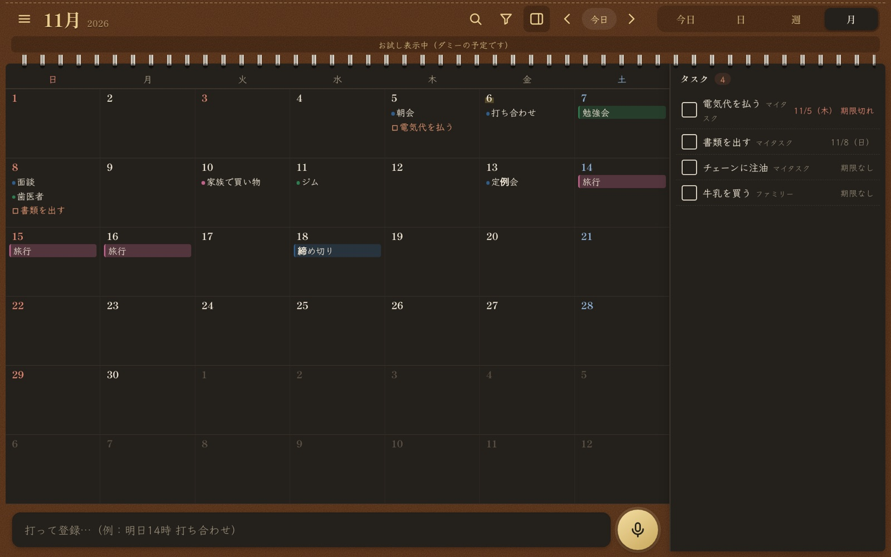

Koeコエ ・ 声で入れる手帳
話すか打つだけで、Googleカレンダーの予定とGoogle ToDoリストのタスクを登録できる手帳アプリです。
Koeを開く開いた画面の「ログインせずにお試し表示」から、Googleアカウントなしでダミーの予定で試せます。

できること
- 声や文字で登録：「明日14時 打ち合わせ」のように入れると、日時と内容を読み取ります。
- 登録前に必ず確認：確認画面で内容を見て、直してから登録します。勝手には登録しません。
- 今日・日・週・月の表示：Googleカレンダーの予定を手帳のように見られます。
- 予定の変更と削除：時刻や内容の変更、繰り返し予定の変更もできます。削除は確認してから行います。
- タスクの管理：Google ToDoリストのタスクを登録し、完了にできます。
- 表示の切り替え：表示するカレンダーとToDoリストを選べます。
- パソコンでの操作：広い画面に合わせた表示、マウスでの移動、キーボード操作に対応します。
使い方
- Googleアカウントでログインし、カレンダーとToDoリストの利用を許可します。
- マイクのボタンを押して話すか、入力欄に打ちます。
- 確認画面で内容を確かめて、登録します。
Googleアカウントの情報の使いかた
Koeは次の許可を使います。どれも、利用者が画面で行う操作のためだけに使います。
| 許可 | 使う目的 |
|---|---|
カレンダーの一覧を見るcalendar.calendarlist.readonly | カレンダーの名前と色を表示し、表示するカレンダーや登録先を選べるようにします。 |
カレンダーの予定を見る・編集するcalendar.events | 予定を表示し、利用者の操作に応じて登録・変更・削除します。 |
ToDoリストのタスクを見る・編集するtasks | タスクを表示し、利用者の操作に応じて登録・変更・完了・削除します。辞書と設定をToDoリスト内の「Koe設定」に保存し、端末の間で共有します。 |
- Koeは独自のサーバーを持ちません。予定やタスクは、利用者の端末とGoogleの間で直接やり取りします。
- 開発者が利用者の予定やタスクを見ることはありません。販売や広告にも使いません。
- 詳しくはプライバシーポリシーをご覧ください。声の文字起こしの扱いも書いています。
In English
Koe is a voice-first planner for Google Calendar and Google Tasks. Speak or type an event or task, check it on the confirmation screen, and Koe adds it to your account. It requests access only for user-facing features: viewing your calendar list, viewing and editing calendar events, and viewing and editing tasks. Koe has no server of its own, so your data moves directly between your device and Google. It is never sold or used for advertising. See the privacy policy (in Japanese).